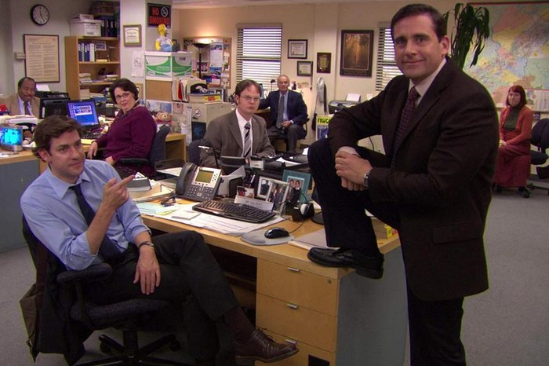

The Offfice
Sinopse
The Office retrata o cotidiano de um escritório em Scranton, na Pensilvânia. Filial da empresa fictícia Dunder Mifflin, os funcionários tem como função vender o suprimento de papel fornecido pela companhia. Michael Scott (Steve Carell), gerente da franquia, é um chefe incoerente e imaturo mas que se preocupa com o bem estar de seus empregados. Assim, The Office traça um olhar cômico e honesto sobre seus personagens, destacando suas diferenças e particularidades e como isso afeta a convivência diária durante o trabalho.
Elenco
Steve Carell, Jenna Fischer, John Krasinski, Rain Wilson, B.J Novak
